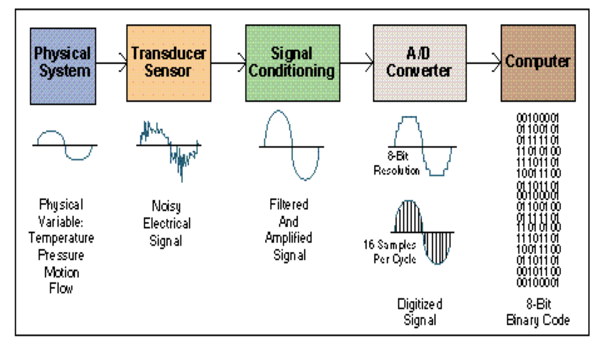

Data Acquisition Systems
Authors: Miracle C. Nkemdirim & Ekene A. Okonkwo
Faculty of Electrical Engineering, University of Ottawa, ON K1N 6Y7, Canada
A Quick Introduction
Data Acquisition systems refer to electronic systems that sense changes in physical variables, convert these changes to electrical signals, then cleans the signal before converting the signal to computer recognizable formats. There are five main components fundamental to every data acquisition system. The first is the physical system; this refers to physical variables or parameters that are subject to change due to natural or artificial catalysts. Examples of these physical variables are temperature, pressure, motion and flow. The second fundamental feature of data acquisition systems are transducers or sensors, these are electronic components or devices that convert physical variables into voltage, current, frequency, pulses or other signals.
The next component is the signal conditioning system, this system consists of filtering and amplifying devices to clean the signal and make it more suitable for further processing. The fourth fundamental feature is the Analog to Digital Converter (ADC), it is a system that is responsible for converting analog input into digital output. The last component necessary in data acquisition systems are called computers, they are systems that deal with the organizing and transmitting of the binary signals gotten from the ADC.
References
[1] http://www.site.uottawa.ca/~rhabash/ELG4139LNDAS2012.pdf